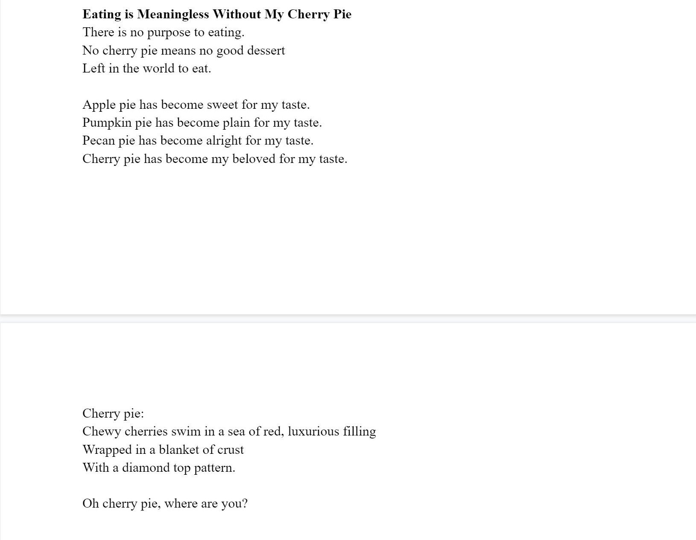
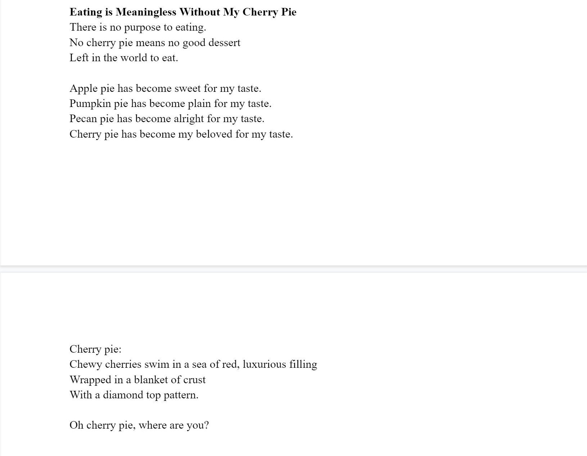
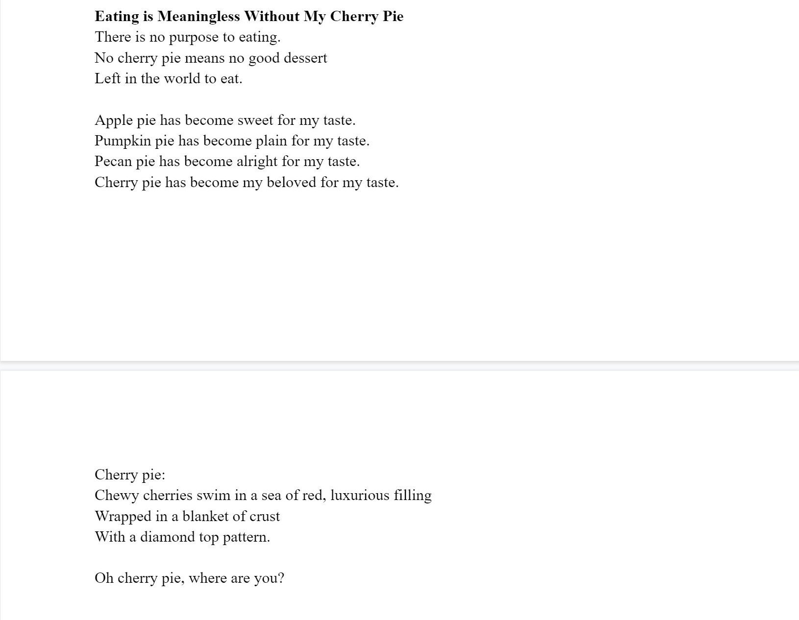

Joaly Vazquez
I am a 2022 graduate from North Hollywood High School. I am currently pursuing a Bachelors in Creative Writing, and plan on having Spanish as my second major. I am seeking out an internship as a copywriter or an editorial assistant. Furthermore, I am considering gaining a Masters In Creative Writing. My ultimate goal is to publish a book I have been working on since high school, and publish a book of poems. At the same time I am thinking of making my book into a trilogy.
Apart from writing, I am investing myself and going back to my passion of making crafts. One of my goals for crafts is to recreate a miniature scale model of Spooky Island from the 2002 movie, Scooby-Doo. My second goal is to recreate the Mystery Machine from Scooby-Doo with all of its details, and have it functioning as a real car. I began my passion with crafts when I was younger. I would try to fix things with the materials I had available. This became a place for me to expand my creativity by tinkering with objects and being an inventor by making crafts.
During the pandemic, I got into writing. My family got COVID, and my grandma got it as well making it scarier to imagine the pain I might have to go through if she were to pass on. I needed a place to vent out, and that place would be writing. I never thought writing would become one of my main passions. I was able to vent anything I wanted to without feeling judged by how good the writing was. After a while, I would ask my friends to give their opinion on my piece. Thus, I decided to pursue writing from junior year of high school and beyond.
At first I wanted to become an animator and work for Warner Bros. or Disney. However, I became frustrated with my own drawing skills. The pandemic gave me an opportunity to express myself with writing. I have directed myself towards writing poetry as my main thing. Although writing is what I am pursuing the most right now, I plan on going back to animation. I want to take my time in drawing and creating a comic which I plan on publishing on the app called WEBTOON.
I would describe myself as an organized and energetic hard worker. I strive to do my best in any situation I am placed in. I seek help when I am stuck in my situation rather than trying to stress about figuring it out. I am bilingual in English and Spanish. My passions of writing, drawing, and creating crafts drive me towards achieving my future goals.
I have been part of programs such as Upward Bound North Hollywood and Big Brother Big Sister of LA. For BBBSLA, I would participate in a bi-weekly mentorship program where I would be paired with “bigs” who would be our mentors that helped me develop academic and personal skills. In Upward Bound, I participated in weekly and monthly academic and personal skill development activities, learned about different opportunities and resources in college, and shaped me into being more confident.
Experience
Big Brother Big Sister of Los Angeles
• Participate in bi-weekly mentorship program that helped develop academic and personal skills
• Paired with "bigs" who would become our mentors
• Learned to set goals for myself
Upward Bound North Hollywood
• Participate in weekly and monthly academic and personal skill development activities
• Learned about different opportunities and resources in colleges
• Shaped my confidence
Creative Writers Guild
• Participated in weekly prompts
• Learned different skills from weekly slides
• Become part of projects
• Helped shape me to become a better writer
Education
UC Riverside
Portfolio


 

